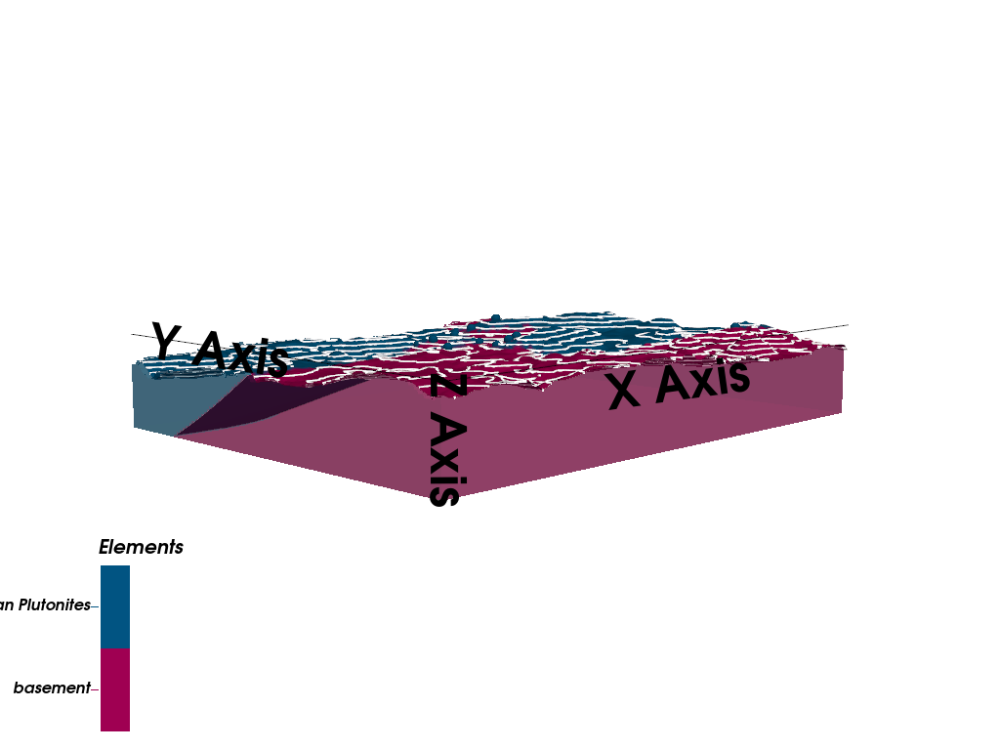

Note
Go to the end to download the full example code.
Simple Geological Model - Tharsis Region¶
This example creates a simple 3D geological model of the Tharsis region using GemPy.
Overview
The Tharsis mining district in southwestern Spain is part of the Iberian Pyrite Belt (IPB), one of the world’s most important volcanogenic massive sulfide (VMS) provinces. This example demonstrates the fundamental workflow for creating a 3D geological model from structural data.
Geological Context
The Tharsis deposit consists primarily of Tournaisian-age plutonites that intrude into older Devonian basement rocks. The intrusion created significant hydrothermal alteration and mineralization, making it a target for geophysical exploration methods.
Technical Details
This model uses:
Octree refinement (level 5): Adaptive mesh refinement that concentrates computational effort near geological interfaces while maintaining efficiency in homogeneous regions
Real structural data: Surface contact points and orientation measurements from field mapping
Topographic integration: High-resolution DEM to accurately represent surface geology
Note
The coordinate system uses UTM Zone 29N projection (EPSG:32629) with elevations in meters above sea level.
Import Libraries¶
We use GemPy for 3D implicit geological modeling. GemPy uses a universal co-kriging interpolation approach to construct continuous 3D geological surfaces from sparse data points.
Universal Co-Kriging
GemPy’s core interpolation engine is based on Universal Co-Kriging, a geostatistical method that combines multiple types of information into a single consistent 3D model.
Where:
\(Z(x)\) is the value of the potential field at location \(x\)
\(\sum \lambda_i Z(x_i)\) represents the kriging part (honoring point data)
\(\sum \beta_j f_j(x)\) represents the universal part (honoring orientations/gradients)
This approach ensures that the resulting surfaces are both continuous and honor all structural constraints simultaneously.
NumPy provides numerical computing capabilities for array operations.
import numpy as np
import gempy as gp
# Set random seed for reproducibility
np.random.seed(1234)
Setting Backend To: AvailableBackends.PYTORCH
Import paths configuration
from mineye.config import paths
Define Model Extent and Resolution¶
The model covers the Tharsis mining district in UTM coordinates (Zone 29N).
Model Extent: The bounding box defines the 3D volume for interpolation:
X range: 33.96 km (East-West direction)
Y range: 25.12 km (North-South direction)
Z range: 1.005 km (from -500m to +505m elevation)
The vertical extent captures both subsurface structures (down to 500m below sea level) and topography (up to 505m above sea level).
min_x = -707_521 # * Cropping the corrupted area of the geotiff
max_x = -675558
min_y = 4526832
max_y = 4551949
max_z = 505
model_depth = -500
extent = [min_x, max_x, min_y, max_y, model_depth, max_z]
# **Model resolution**: use octree with refinement level 5
#
# Octree refinement adaptively subdivides the model space:
#
# * Level 5 creates up to 2^5 = 32 subdivisions per dimension
# * Finer resolution near geological contacts
# * Coarser resolution in homogeneous regions
# * Significantly more efficient than regular grids for complex geometries
resolution = None # Using octrees instead of regular grid
refinement = 5
Get Data Paths¶
Load paths to structural data
Structural geological data consists of two types:
Surface points: 3D coordinates (X, Y, Z) marking where geological contacts were observed, typically from field mapping, drill holes, or cross-sections
Orientations: The 3D orientation (dip, azimuth) of geological surfaces at specific locations, providing information about how surfaces trend through space
These data constrain the implicit interpolation algorithm to construct geologically plausible 3D surfaces.
mod_or_path = paths.get_orientations_path()
mod_pts_path = paths.get_points_path()
print(f"Orientations: {mod_or_path}")
print(f"Points: {mod_pts_path}")
Orientations: /home/leguark/PycharmProjects/Mineye-Terranigma/examples/Data/Model_Input_Data/Simple-Models/orientations_mod.csv
Points: /home/leguark/PycharmProjects/Mineye-Terranigma/examples/Data/Model_Input_Data/Simple-Models/points_mod.csv
Create GemPy Geological Model¶
Build the model structure with imported structural data
GemPy’s implicit modeling approach:
Uses a universal co-kriging interpolator to construct smooth 3D scalar fields
Each geological surface is represented as an isosurface of a scalar field
The gradient of the scalar field (orientation data) and the isovalue (surface points) constrain the interpolation
The result is a continuous 3D model that honors all input data
The ImporterHelper automatically reads and formats CSV files containing the
structural data.
simple_geo_model = gp.create_geomodel(
project_name='simple_model',
extent=extent,
refinement=refinement,
resolution=resolution,
importer_helper=gp.data.ImporterHelper(
path_to_orientations=mod_or_path,
path_to_surface_points=mod_pts_path,
)
)
Map Geological Units¶
Define the stratigraphic stack
Stratigraphic series organize geological formations into age-related groups. In GemPy, each series can contain multiple surfaces (formations) that are interpolated together using the same scalar field.
For this simple model, we have a single series containing the Tournaisian Plutonites. This intrusive body represents the youngest geological unit in the model, with all other rocks implicitly treated as the “basement” by GemPy.
In more complex models, you would define multiple series representing different geological events (e.g., sedimentation, folding, faulting, intrusion).
gp.map_stack_to_surfaces(
gempy_model=simple_geo_model,
mapping_object={
"Tournaisian_Plutonites": ["Tournaisian Plutonites"],
}
)
Compute Model with Topography¶
Add topographic surface from DEM and compute the model
Digital Elevation Models (DEMs) provide high-resolution surface topography that significantly improves the accuracy of near-surface geological modeling.
Importance of topography in geological modeling:
Defines the true upper boundary of the model (not just a flat plane)
Critical for geophysical modeling (gravity, magnetics) where topography affects measurements
Enables accurate calculation of true thickness of geological units
Important for resource estimation and mine planning
The DEM is loaded from a raster file and resampled to match the model grid. GemPy automatically clips the geological model at the topographic surface, ensuring that geological units only exist below ground.
topography_path = paths.get_topography_path()
gp.set_topography_from_file(
grid=simple_geo_model.grid,
filepath=topography_path,
crop_to_extent=[
simple_geo_model.grid.extent[0],
simple_geo_model.grid.extent[2],
simple_geo_model.grid.extent[1],
simple_geo_model.grid.extent[3]
]
)
# Compute the model with topography
gp.compute_model(simple_geo_model)
Active grids: GridTypes.OCTREE|TOPOGRAPHY|NONE
Setting Backend To: AvailableBackends.PYTORCH
Using sequential processing for 1 surfaces
/home/leguark/.venv/2025/lib/python3.13/site-packages/torch/utils/_device.py:103: UserWarning: Using torch.cross without specifying the dim arg is deprecated.
Please either pass the dim explicitly or simply use torch.linalg.cross.
The default value of dim will change to agree with that of linalg.cross in a future release. (Triggered internally at /pytorch/aten/src/ATen/native/Cross.cpp:63.)
return func(*args, **kwargs)
Visualize the Model¶
2D Cross-Sections
Before diving into 3D, it’s often helpful to inspect 2D cross-sections. This allows for a clear view of the internal structural relationships and the behavior of the interpolator along specific planes.
We’ll plot a cross-section along the Y-axis (North-South) at the center of the model.
import gempy_viewer as gpv
gpv.plot_2d(simple_geo_model, direction='y', cell_number='mid', show_data=True)

<gempy_viewer.modules.plot_2d.visualization_2d.Plot2D object at 0x7f2db0ed9940>
3D Visualization
Create 3D visualization of the geological model
GemPy Viewer provides interactive 3D visualization capabilities using PyVista.
Visualization features:
3D lithology blocks: Colored volumes representing different geological units
Topographic surface: The DEM draped over the model
Input data: Surface points and orientation measurements shown in 3D space
Vertical exaggeration (ve=5): Stretches the Z-axis by a factor of 5 to enhance the visibility of subtle geological features
The visualization is fully interactive, allowing rotation, zooming, and inspection of the geological model from any angle.
import gempy_viewer as gpv
gpv.plot_3d(simple_geo_model, ve=5, image=False,
kwargs_pyvista_bounds={
'show_xlabels': False,
'show_ylabels': False,
'show_zlabels': False
}
)

/home/leguark/PycharmProjects/gempy_viewer/gempy_viewer/modules/plot_3d/drawer_surfaces_3d.py:38: PyVistaDeprecationWarning:
../../../gempy_viewer/gempy_viewer/modules/plot_3d/drawer_surfaces_3d.py:38: Argument 'color' must be passed as a keyword argument to function 'BasePlotter.add_mesh'.
From version 0.50, passing this as a positional argument will result in a TypeError.
gempy_vista.surface_actors[element.name] = gempy_vista.p.add_mesh(
<gempy_viewer.modules.plot_3d.vista.GemPyToVista object at 0x7f2db1026ba0>
Summary and Next Steps¶
In this example, we demonstrated the complete workflow for creating a simple 3D geological model using GemPy:
✓ Defined the model extent and resolution
✓ Imported structural geological data (surface points and orientations)
✓ Created a GemPy geomodel with stratigraphic organization
✓ Computed the 3D geological model using implicit interpolation
✓ Integrated high-resolution topography from a DEM
✓ Visualized the resulting 3D model
Key Takeaways:
GemPy uses implicit modeling to create continuous 3D geological surfaces from sparse data
Octree refinement provides efficient adaptive resolution
Topography integration is crucial for accurate geological modeling
The resulting model can be used for further analysis (geophysics, resource estimation, etc.)
Next Steps:
Example 02: Forward gravity modeling using this geological model
Example 03: Bayesian segmentation for lithological mapping
Probabilistic examples: Uncertainty quantification and joint inversion
sphinx_gallery_thumbnail_number = 2
Total running time of the script: (0 minutes 36.234 seconds)